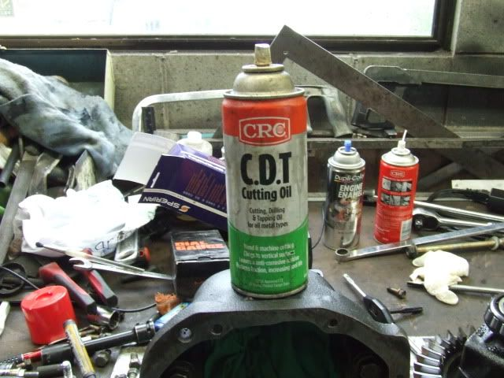
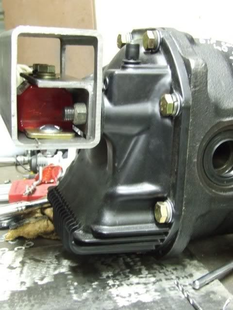
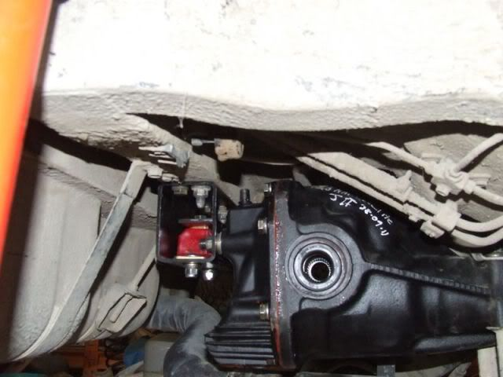

-
So here is the procedure for fitting a Z32 NA Finned Diff Cover to your Z31 Diff.
What are the Benefits ?
More Fluid Capacity
Looks Better
Help Cool your VLSD or CLSD better
Want to know more ? Go do a search either Here Or HybridZ.org
I am going to assume a reasonable level of competency if you are doing this Mod.
Tools Required
M10x 1.5 Tap
9mm HSS drill
Hand Drill with 10mm Chuck
G Clamp
Parts Required
8 of M10X1.5 bolts 30mm Length
8 Washers to suit M10 Bolts
Step 1
Remove the Open Carrier from your diff , clean thoroughly and cover the pinion gear with a nice big Rag.
The inside case of the diff needs to be clean so that any swarf does not get all stuck to the inside of the case, fit the G Clamp in there to hold it down to the bench so that its not moving about when you try and complete the next few steps
Step 2
Take your hand drill and 9mm bit and carefully Drill out the 8 Holes, Go slowly and make sure to hold the drill firmly as it will be quite grabby.
You should also mark your drill bit at 30mm so that you can see how far you have drilled.
Step 3
Take your M10x1.5 tap and carefully tap out all 8 Holes, apply a small amount of cutting liquid and clean thoroughly in between each hole. You need to be proficient with a thread tap, if you are not I suggest you do a few practice holes in a piece of steel that does not matter.

Step 4
Use a small brush or compressed air to get all the swarf and crap out of all the holes, when this is done take you clean tap and go over each hole again to make sure they are nice and smooth.
Step 5
Install your LSD as per Nissan FSM , bolt your cover up and grab a cold Beer You are done
Other Handy Info
The Z32 NA diff Cover has 120mm Hole Spacing on the rear cover IT WILL NOT FIT YOUR OEM DIFF MOUNT.
When I get my hands on a Z31 Parts.com Diff Mount I will Edit the procedure to include those details85 Turbo Slick Top
__________________________________________________ _____ -
Re: How to install Z32 Finned Diff Cover onto Z31 Diff
Ok so here it goesjames wrote: When I get my hands on a Z31 Parts.com Diff Mount I will Edit the procedure to include those details


and here it goes in the car

So Basically what you need to do is open the drawing, make the angle plate, do some clearanceing on the box housing and your all set.
If you do this its at your own risk or whatever and there is no comeback to me , its a modification to a V2 Diff mount and you do this at your own risk.85 Turbo Slick Top
__________________________________________________ _____ -
Re: How to install Z32 Finned Cover onto Z31 Diff & V2Diff M
I gather that the only difference here is the size of the holes on the diff cover?
you can acquire 1mm thick spacers from mcmaster-carr that will take up the slack in the diff cover, so that you don't have to drill the diff housing at all. -
Re: How to install Z32 Finned Cover onto Z31 Diff & V2Diff M
This is true,i already had the drill bit and the tap and die set so i did it that way.Careless wrote: I gather that the only difference here is the size of the holes on the diff cover?
you can acquire 1mm thick spacers from mcmaster-carr that will take up the slack in the diff cover, so that you don't have to drill the diff housing at all.85 Turbo Slick Top
__________________________________________________ _____

Copyright © 2006–. All rights reserved. Privacy Policy